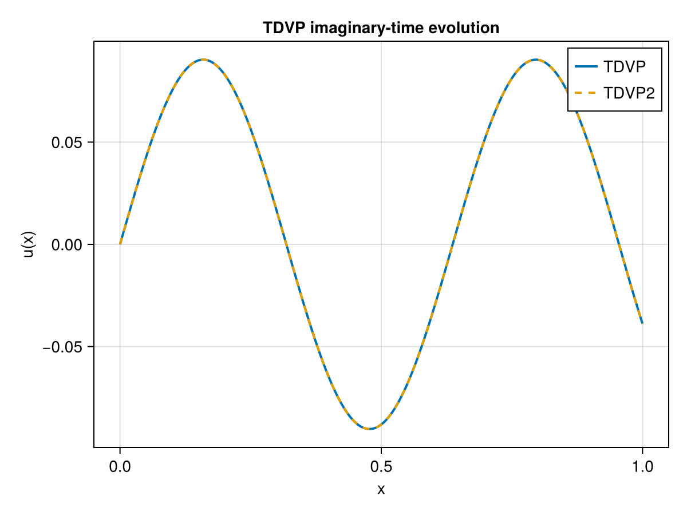
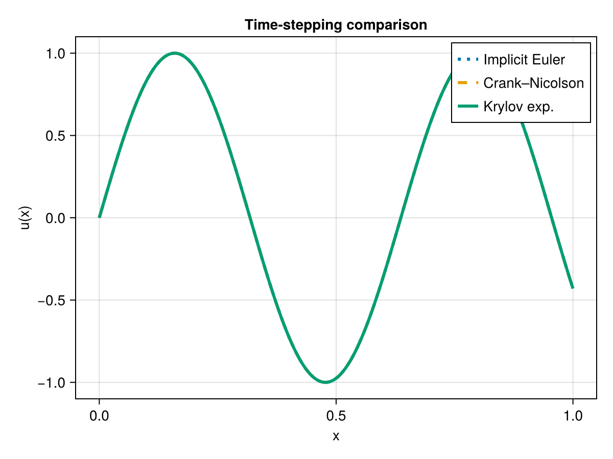

Solver Guide
TensorTrainNumerics.jl provides five families of iterative solvers for problems in tensor-train format: ALS, MALS, DMRG, AMEn, and TDVP. In addition, three time-stepping methods are available for evolution problems.
All solvers operate on AbstractTTvector and AbstractTToperator inputs, so they accept both plain TTvector/TToperator and the QTTvector/QTToperator wrappers transparently.
Use linear_solve(A, b, x0, MALS(trunc_tol = 1e-5)) for linear systems and eigen_solve(A, x0, DMRG(trunc_tol = 1e-12)) for eigenvalue problems. The older *_linsolve and *_eigsolve names are kept as compatibility wrappers.
Solver options
The solvers use the same keyword name for the same setting:
| Keyword | Meaning |
|---|---|
max_bond | Largest bond dimension. Sweep solvers accept a vector with one entry per rank stage. |
max_sweeps | Number of sweeps (one sweep is a left-to-right and a right-to-left pass). A vector gives the sweeps of each rank stage; stage k runs max_sweeps[k] sweeps with bond dimension at most max_bond[k]. |
trunc_tol | Relative truncation tolerance of SVD rank truncation: truncating all d − 1 bonds changes the tensor train by at most trunc_tol·‖x‖ (the rule of tt_round!). |
kickrank | AMEn only: the number of residual directions added to a bond per micro-step. |
tol | Convergence tolerance of the outer iteration (Krylov, PenaltyALS, cross interpolation). For AMEn it is the target relative residual, used both to stop and to truncate ranks. |
local_solver, local_threshold, local_maxiter, local_tol | How the small local problems of ALS, MALS, DMRG, and AMEn are solved: :direct, :iterative, or :auto (direct up to local_threshold unknowns). |
verbosity | 0 silent, 1 warnings, 2 one line per sweep or iteration, 3 one line per micro-step. |
show_progress | Display a progress bar (on by default). Below the bar it shows the sweep, step, or iteration count and one quantity: the latest eigenvalue, the largest bond dimension, the penalty, or the validation error. Two-site updates (MALS, DMRG, tdvp2) also show the largest relative truncation error of the latest sweep or step. Solvers called inside another solver do not show their own bar. |
return_info | Also return a named tuple with diagnostics (residual or error estimate). |
alg | The algorithm object, for example ALS(), MALS(), DMRG(), AMEn(), or Krylov(). |
Every solver and time-evolution routine shows a progress bar by default; pass show_progress = false to silence it.
ALS, MALS, DMRG, AMEn — alternating sweep solvers
These four solvers address linear systems $Ax = b$ and eigenvalue problems $Ax = \lambda x$ by sweeping over TT sites and updating one (ALS, AMEn) or two (MALS, DMRG) cores at a time by solving a small local problem. They differ in how bond dimensions are managed and in when they stop.
| Property | ALS | MALS | DMRG | AMEn |
|---|---|---|---|---|
| Bond dimensions | Fixed | Adaptive (SVD) | Adaptive (SVD) | Adaptive (residual enrichment and SVD) |
| Local problem | Single-site | Two-site | Two-site | Single-site |
| Stopping | Runs max_sweeps | Runs max_sweeps | Runs max_sweeps | Residual at most tol, or max_sweeps |
Non-symmetric A | Yes | No (symmetrized local systems) | No (symmetrized local systems) | Yes |
| Memory per sweep | Low | Moderate | Moderate–high | Low |
| Linear solve | linear_solve(..., ALS(...)) | linear_solve(..., MALS(...)) | linear_solve(..., DMRG(...)) | linear_solve(..., AMEn(...)) |
| Eigenvalue solve | eigen_solve(..., ALS(...)) | eigen_solve(..., MALS(...)) | eigen_solve(..., DMRG(...)) | eigen_solve(..., AMEn(...)) |
ALS
ALS holds the bond dimensions fixed and updates one core per step. It converges reliably when a good initial rank is provided, and has the lowest memory footprint.
using TensorTrainNumerics
d = 6
dims = ntuple(_ -> 2, d)
A = rand_tto(dims, 3)
b = rand_tt(dims, [1; fill(3, d - 1); 1])
x0 = rand_tt(dims, [1; fill(2, d - 1); 1])
x_als = linear_solve(A, b, x0, ALS(max_sweeps = 2))MPS{Float64} with 6 sites
Physical dims : (2, 2, 2, 2, 2, 2)
Bond dims : [1, 2, 2, 2, 2, 2, 1]
Orthogonality : [0, 1, 1, 1, 1, 1]For eigenvalue problems use eigen_solve with ALS:
E, x_eig = eigen_solve(A, x0, ALS(max_sweeps = 3))
println("Lowest eigenvalue: ", E[end])Lowest eigenvalue: -96.26723600922104MALS
MALS updates two adjacent cores simultaneously, then SVD-truncates the merged core to control rank growth. This allows the bond dimensions to adapt automatically.
using TensorTrainNumerics
d = 6
dims = ntuple(_ -> 2, d)
A = rand_tto(dims, 3)
b = rand_tt(dims, [1; fill(3, d - 1); 1])
x0 = rand_tt(dims, [1; fill(2, d - 1); 1])
x_mals = linear_solve(A, b, x0, MALS(trunc_tol = 1e-5))
E_mals, x_eig_mals = eigen_solve(A, x0, MALS(max_sweeps = 3))([-13.768868862660101, -39.40163433113789, -23.79954775825666, -61.293352958706016, -50.702995075807884, -50.702995075807884, -50.615977529865646, -42.35523282980379, -66.42413627485378, -30.167605369168506 … -19.990115503667877, -56.667248985524274, -38.83244039782641, -38.12374648360723, -51.074308891275145, -51.074308891275145, -38.10093091904499, -42.88382752881042, -49.8606606597675, -16.72123532667794], MPS{Float64}(6 sites), [2, 4, 4, 4, 4, 4, 4, 8, 8, 8 … 8, 8, 8, 8, 8, 8, 8, 8, 8, 8])DMRG
DMRG uses the same two-site update as MALS but includes richer local subspace expansion strategies that accelerate convergence, especially for eigenvalue problems. max_bond and max_sweeps accept per-stage vectors: stage k runs max_sweeps[k] sweeps with bond dimension at most max_bond[k].
using TensorTrainNumerics
d = 4
dims = ntuple(_ -> 2, d)
A = rand_tto(dims, 3)
b = rand_tt(dims, [1; fill(2, d - 1); 1])
x0 = rand_tt(dims, [1; fill(2, d - 1); 1])
x_dmrg = linear_solve(A, b, x0, DMRG(max_sweeps = 19, trunc_tol = 1e-12))
E_dmrg, x_eig, r_hist = eigen_solve(A, x0, DMRG(
max_sweeps = [1, 2, 4],
max_bond = [2, 3, 4],
trunc_tol = 1e-12,
))
println("Lowest eigenvalue: ", E_dmrg[end])
println("Rank history: ", r_hist)
DMRG linear solve 11%|███▋ | ETA: 0:00:21
sweep: 2/19
largest rank: 4
truncation error: 0.0
DMRG linear solve 100%|██████████████████████████████████| Time: 0:00:02
sweep: 19/19
largest rank: 4
truncation error: 0.0
DMRG eigen solve 29%|██████████ | ETA: 0:00:07
sweep: 2/7
eigenvalue: -5.206734351363834
truncation error: 0.0021381711831672903
DMRG eigen solve 100%|███████████████████████████████████| Time: 0:00:02
sweep: 7/7
eigenvalue: -5.183775657556985
truncation error: 0.0
Lowest eigenvalue: -10.26558506640925
Rank history: [2, 2, 2, 2, 2, 3, 3, 3, 3, 3, 3, 3, 3, 4, 4, 4, 4, 4, 4, 4, 4, 4, 4, 4, 4, 4, 4, 4, 4]AMEn
AMEn updates one core per step, like ALS, and then adds a few directions taken from an approximation of the residual to the basis of that core. The added directions let the bond dimensions grow where the solution needs it, and a truncated SVD removes directions that turn out not to be needed. The local problems stay single-site, so they are smaller than those of MALS and DMRG by a factor of the physical dimension.
AMEn is the only sweep solver with a stopping test: it stops when the largest relative residual of the local problems in a sweep is at most tol. If max_sweeps is reached first, it warns and returns the current iterate. The guess can have rank 1. The test measures the residual within the current TT basis, which the enrichment keeps representative of the full residual; when max_bond limits the ranks or kickrank = 0, check the residual returned by return_info = true.
using TensorTrainNumerics
d = 6
dims = ntuple(_ -> 2, d)
A = Δ(d) + 0.5 * id_tto(d)
b = rand_tt(dims, [1; fill(3, d - 1); 1])
x0 = rand_tt(dims, 1)
x_amen, info = linear_solve(A, b, x0, AMEn(tol = 1e-8, return_info = true))
info(residual = 6.289930319846076e-16, converged = true, sweeps = 4)The local systems are Galerkin projections of A itself, so non-symmetric operators such as advection–diffusion are supported. The convergence proof of Dolgov and Savostyanov covers Hermitian positive definite operators.
For eigenvalue problems, eigen_solve with AMEn minimizes the Rayleigh quotient one core at a time and enriches the basis with the eigenvalue residual A x − λ x:
E_amen, x_eig_amen, r_hist_amen = eigen_solve(Δ(d), x0, AMEn(tol = 1e-8))
println("Lowest eigenvalue: ", E_amen[end])Lowest eigenvalue: 0.0023355463353466385The script examples/solver_comparison.jl runs ALS, MALS, DMRG, and AMEn on a 2D Poisson problem in QTT format, logs the residual, the largest bond dimension, and the wall time of each, and plots the residual against wall time.
TDVP — time-dependent variational principle
TDVP evolves a TT-vector while keeping the state on the TT manifold of fixed (or bounded) rank. Two variants are available:
tdvp— single-site TDVP, fixed rank, lower cost per step.tdvp2— two-site TDVP with SVD truncation, adaptive rank.
Both support two modes:
- real time (default): $\dot{u} = -iAu$, so the state after time $t$ approximates $e^{-iAt} u_0$;
- imaginary time (
imaginary_time = true): $\dot{u} = Au$, so the state approximates $e^{A\tau} u_0$.
With normalize = true the state is rescaled to unit norm after every step. Imaginary-time evolution with $A = -K$ therefore converges to the ground state of $K$. The operator below is a negative semidefinite discrete Laplacian, so imaginary-time evolution damps all but the smoothest mode.
Each entry of steps is a step size. Setting substeps splits every step into that many substeps of equal duration, which reduces the splitting error without changing the total evolution time.
using TensorTrainNumerics
using CairoMakie
d = 8
h = 1.0 / (2^d - 1)
A = h^2 * toeplitz_to_qtto(-2.0, 1.0, 1.0, d)
u0 = qtt_sin(d, λ = π)
dt = 1e-2
steps = fill(dt, 500)
sol_tdvp = tdvp(A, u0, steps; imaginary_time = true, normalize = true, substeps = 4)
sol_tdvp2 = tdvp2(A, u0, steps; imaginary_time = true, normalize = true, substeps = 2, max_bond = 8)
xes = LinRange(0, 1, 2^d)
fig = Figure()
ax = Axis(fig[1, 1], xlabel = "x", ylabel = "u(x)", title = "TDVP imaginary-time evolution")
lines!(ax, xes, qtt_to_function(sol_tdvp), label = "TDVP", linewidth = 2)
lines!(ax, xes, qtt_to_function(sol_tdvp2), label = "TDVP2", linewidth = 2, linestyle = :dash)
axislegend(ax)
fig
Time-stepping methods
For the parabolic problem $u_t = A u$, $u(0) = u_0$, three classical time-stepping schemes are provided. Each returns the evolved TT-vector and, with return_info = true, a named tuple whose error field is the relative defect of the last step.
| Function | Scheme | Stability |
|---|---|---|
euler_method | Explicit (forward) Euler | Conditionally stable, $\Delta t < 2/|A|$ |
implicit_euler_method | Implicit (backward) Euler | Unconditionally stable |
crank_nicholson_method | Crank–Nicolson | Unconditionally stable, second-order |
expintegrator | Krylov exponential integrator | Exact up to Krylov tolerance |
using TensorTrainNumerics
using CairoMakie
using KrylovKit
d = 8
N = 2^d
h = 1.0 / (N - 1)
xes = LinRange(0, 1, N)
A = h^2 * toeplitz_to_qtto(-2.0, 1.0, 1.0, d)
u0 = qtt_sin(d, λ = π)
init = rand_tt(u0.ttv_dims, u0.ttv_rks)
steps = collect(range(0.0, 5.0, 500))
sol_impl, info_impl = implicit_euler_method(A, u0, init, steps;
return_info = true, normalize = false)
sol_cn, info_cn = crank_nicholson_method(A, u0, init, steps;
return_info = true, alg = MALS(), normalize = false)
sol_krylov, _ = expintegrator(A, last(steps), u0)
fig = Figure()
ax = Axis(fig[1, 1], xlabel = "x", ylabel = "u(x)", title = "Time-stepping comparison")
lines!(ax, xes, qtt_to_function(sol_impl), label = "Implicit Euler", linestyle = :dot, linewidth = 3)
lines!(ax, xes, qtt_to_function(sol_cn), label = "Crank–Nicolson", linestyle = :dash, linewidth = 3)
lines!(ax, xes, qtt_to_function(sol_krylov), label = "Krylov exp.", linestyle = :solid, linewidth = 3)
axislegend(ax)
fig
Choosing a solver
ALS is the right starting point when you already know a good rank and want low memory use.
MALS or DMRG are better when the target rank is unknown: they grow bonds during sweeps and SVD-truncate them down, so they self-tune. DMRG is often the fastest to converge for eigenvalue problems.
AMEn is the usual first choice for linear systems when the target rank is unknown: it adapts the ranks like MALS and DMRG at the cost of single-site local problems, it has a residual-based stopping test, and it accepts non-symmetric operators.
TDVP is the method of choice for time evolution: it respects the TT manifold geometry and avoids the rank blowup that naive time-stepping causes.
Exponential integrators give the most accurate result for diffusion-type problems at large time steps, at the cost of Krylov subspace construction per step.